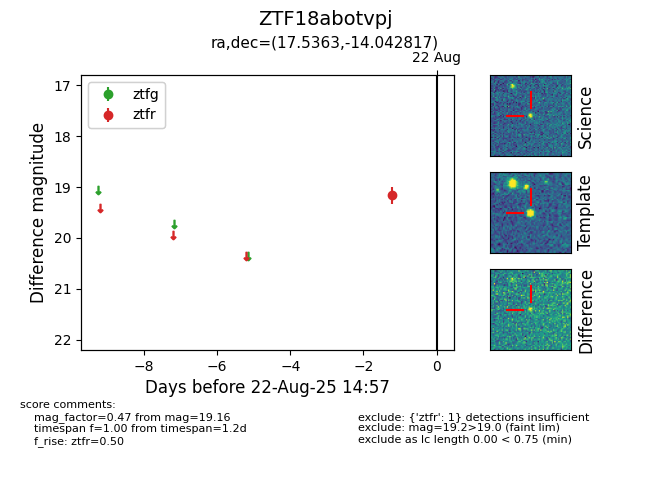

Target ZTF18abotvpj at 2025-08-22 15:16, see:
FINK: fink-portal.org/ZTF18abotvpj
Lasair: lasair-ztf.lsst.ac.uk/objects/ZTF18abotvpj
ALeRCE: alerce.online/object/ZTF18abotvpj
alt names
ZTF18abotvpj (ztf,alerce)
coordinates:
equatorial (ra, dec) = (17.5363,-14.04282)
galactic (l, b) = (142.3064,-76.20591)
photometry
last ztfr=19.16
1 ztfr detections
